LibraryApp
A comprehensive library management system supporting book handling, reservations and borrowings.
- C#
- .NET
- WPF
- XAML
- MVVM
- Entity Framework
- SQL Server
- Google Books API
Application Features
LibraryApp is a desktop application built with WPF that enables complete management of library operations based on a role system: Reader, Librarian, and Administrator. Each user receives access to a dedicated panel and features tailored to their permissions, ensuring intuitive operation and efficient management of library resources.
The Librarian can search for books using the Google Books API, add them to the database (simulating the purchase of new items), and manage their status — including loans, returns, reservations, and marking copies as lost. Readers can browse the catalog, reserve selected books, and borrow available titles. The system automatically sends notifications about upcoming return deadlines and informs users when their reservations are approved.
Technologies & Architecture
The application was built using WPF and the MVVM architecture, which separates business logic from the presentation layer. This makes the codebase easier to maintain and more adaptable for further feature development. The data layer is based on SQL Server, and Entity Framework is used for communication, enabling convenient object-relational mapping and reducing the need to write complex SQL queries.
A key part of the project is the integration with the Google Books API, which allows for fast searching and automatic filling of book information. This enables librarians to easily expand the catalog with new items, while users gain access to accurate and up-to-date data. The application was designed in a modular way, making it flexible and adaptable to different types of libraries, with the option to introduce additional modules in the future.
Take a look inside the application
Librarian main panel
 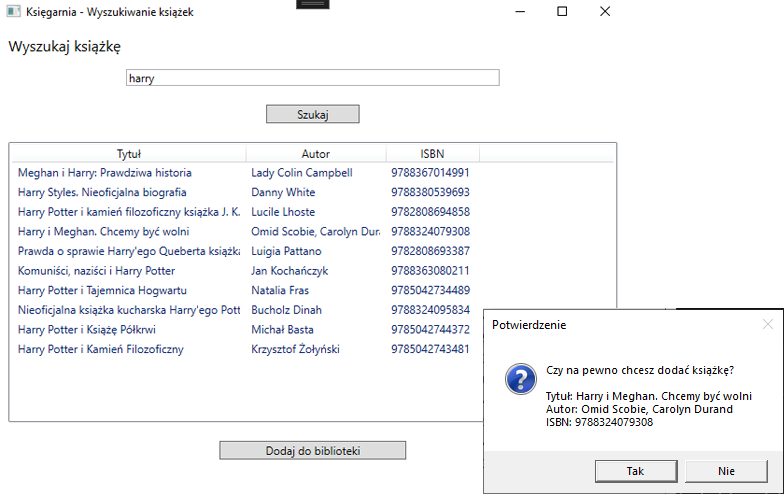
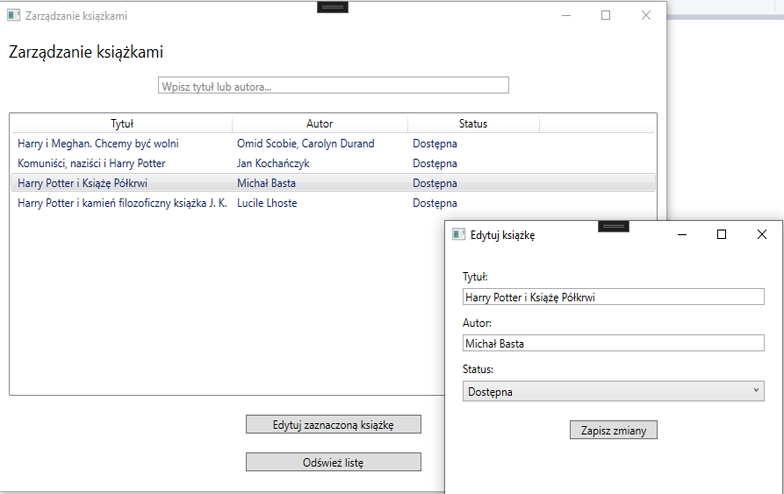
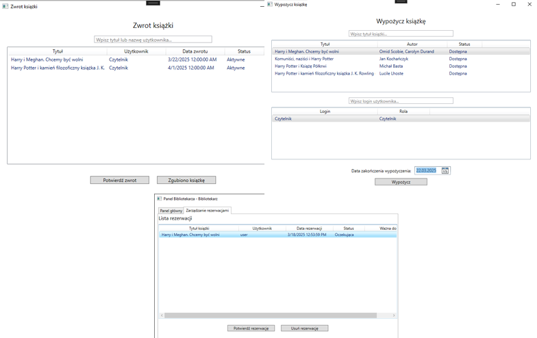
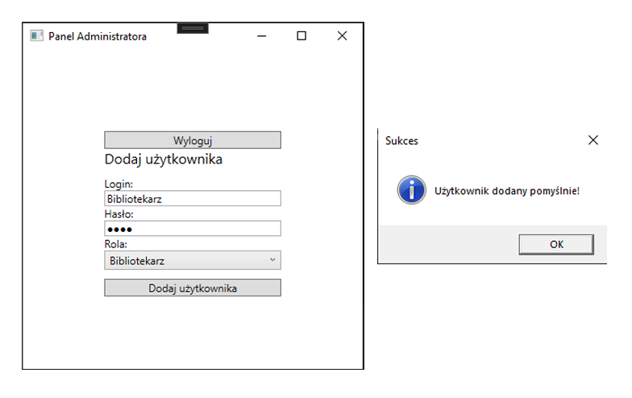
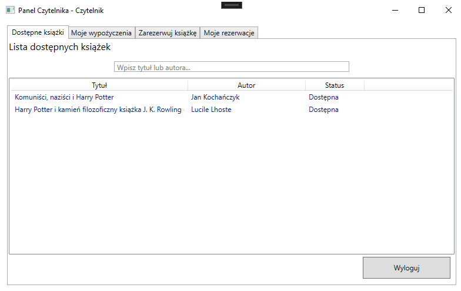
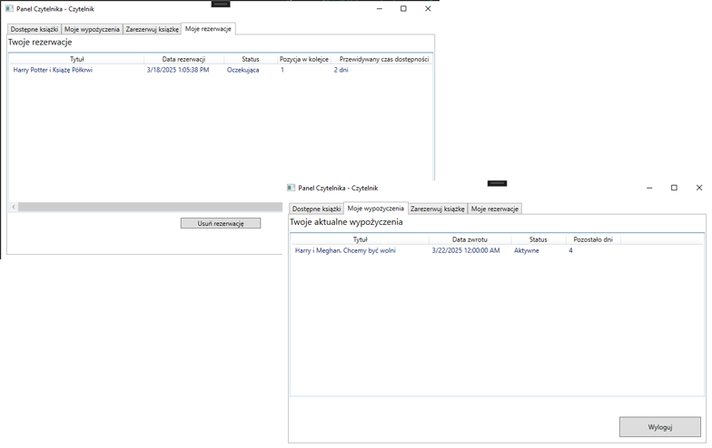
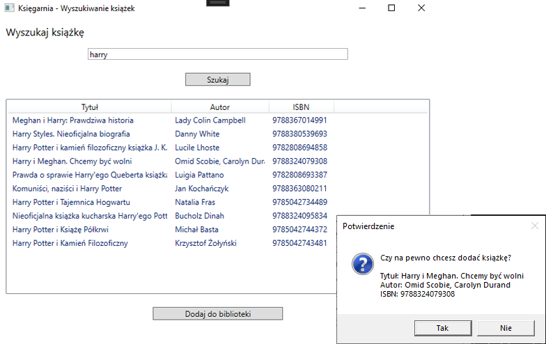
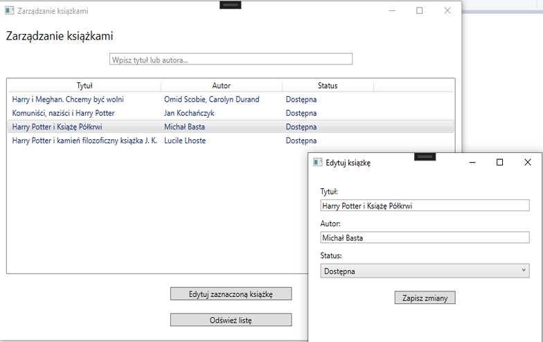
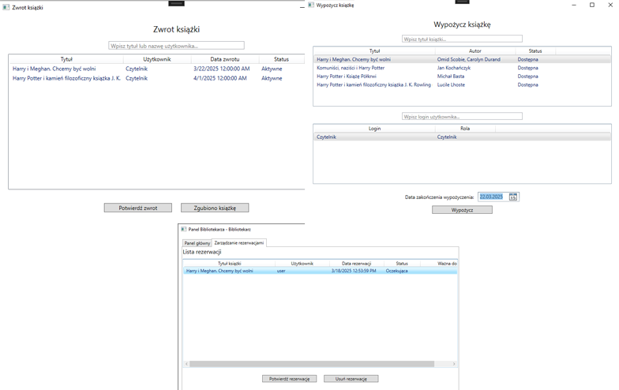
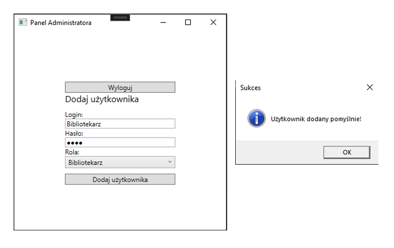
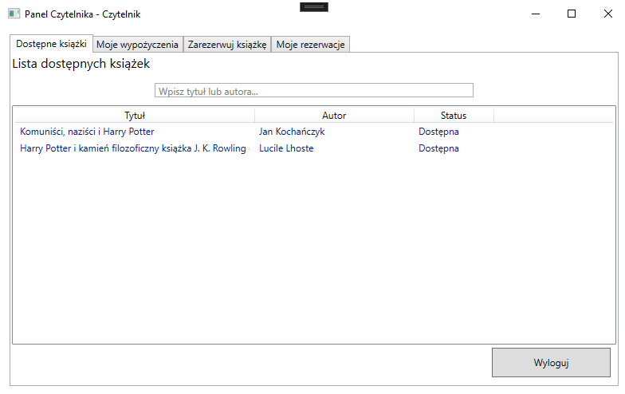
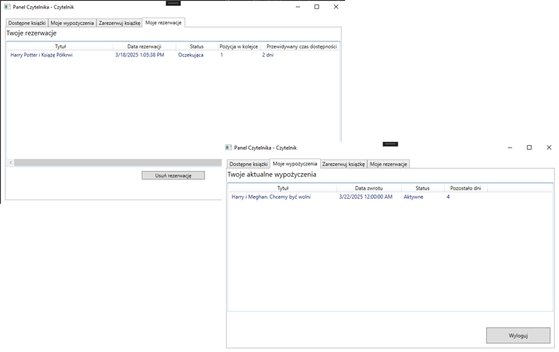
Upcoming updates:
- Email notifications for upcoming return deadlines
- User ratings and comments
- Export user history to PDF
- Extended role and permission system